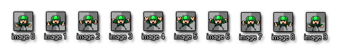
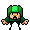
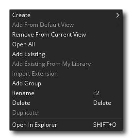
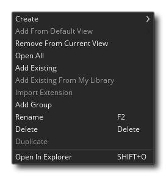

The core of your game will be created from assets added to the
resource tree. This is where you can add everything that
your game requires to run, including a game room, sprites, objects,
paths and a number of other things. A basic game in GameMaker
Studio 2 will require a room to run in, and usually at least
one object and a sprite, although you'll likely use a lot more!
 You can add a resource to the resource tree by
right clicking
You can add a resource to the resource tree by
right clicking  on it and selecting the Create
option from the pop-up menu (for full details on this pop-up menu,
see below). This is the same for all available resources, but each
one has its own unique editor which will open when you do this.
Note that tat the top left of the Resource Tree you have the
Collapse All button
on it and selecting the Create
option from the pop-up menu (for full details on this pop-up menu,
see below). This is the same for all available resources, but each
one has its own unique editor which will open when you do this.
Note that tat the top left of the Resource Tree you have the
Collapse All button  which can be used to close all
open resource folders.
which can be used to close all
open resource folders.
You can see a brief overview of each of the available resources from the resource tree by clicking any of the buttons below:
Sprites are generally the visual representations of objects within the games you create. As such, a sprite is an image drawn using the GameMaker Studio 2 Image Editor, or made with any external drawing program and imported into GameMaker Studio 2. The image used doesn't have to be of a single static thing either... it can be a "strip" image too, ie: multiple images in a a single file which can then be used to make a single animated sprite. For example, the following 10 images form a sprite for a character who is waving his arms while skydiving.

And the actual finished animation would look like this when placed in a game:

A sprite like this is usually a PNG format file, but GameMaker Studio 2 will also accept vector sprites in SWF format, and Spine sprites in JSON (with their accompanying texture atlas file).
You can find out more about adding sprites from the section on the Sprite Editor.
Tile sets are taken from the sprite resources, but are classified as a separate resource since GameMaker Studio 2 will handle them differently when creating your game. Basically a tile set is a single image that GameMaker Studio 2 will break into separate sections based on the values you give for the various settings. You can then use these in the room editor (or procedurally through code) to generate a tile map in your room. They are great for designing any static items in your room, like terrain, walls, backdrops, etc... as they don't have the same overhead that objects have.
Above is an example sprite that would be used as a tile set to create walls. As you can see, it can be "split" into 64x64pixel chunks, which would then placed into the room editor.
NOTE: Tiles are always square, so if you need anything other than that, you should be using an instance with a sprite or an asset layer in the room editor.
You can find out more about adding tile sets from the section on the Tile Set Editor.
Sound is an important part of any game, both for adding depoth to the gameplay and giving feedback in the form of sound effects, and for adding atmosphere in the form of music. GameMaker Studio 2 accepts WAV, MP3 and OGG format files.
In general, WAV files are used for any short sound effects as even though they are generally larger files they will play instantaneously due to the fact that they do not need any type of decoding for playing. MP3 and OGG files should be used for background music or any effect that plays over a longer period of time or that has a rather large file size. These files are much smaller than a WAV file and but do have a CPU overhead associated with them as they have to be decoded before being played.
You can find out more about adding sounds from the section on the Sound Editor.
At some point while creating your games you may need an instance of one of your objects to follow a path through a level. Now, this can be done by simply creating an array of positions within the room and then having the instance move between them, but that can be a chore to set up and is difficult to change, test and adapt for different things. That is when you'd want to create a path resource.
The basic idea of the path resource is rather simple - you define a path by drawing it in the path editor, then you can place an action (or code) in an event of an object to tell the object to follow that particular path in the game room. You can set the speed to follow the path and a number of other actions relating to the position and orientation of the path within the room too.
You can find out more about adding paths from the section on the Path Editor.
A script resource is a collection of codes you have written to create your own function. For example, say you want to have an enemy create a number of instances when it dies, like some gold, an explosion and some blood as well as play a sound. Now you could add all the required code into each object that requires it, but in general you'd be better of creating a single script resource with the code in it and then calling that. This means that you only have to add one line of code into the objects to call this new scripted function, and if you wish to change something you only need to change it once in the script and all the objects will automatically run the new code, rather than have to go through every object and change the same thing in multiple places.
You can find out more about adding paths from the section on the Script Editor.
Shaders are a very powerful tool that can be used to manipulate the graphics that your game renders to the screen, permitting incredibly fast effects that can range from, for example, adding a subtle colour hue to a sprite, right up to full screen distortion effects. Basically it's a two-part program that runs directly on the graphics card itself, making it very fast since the GPU is doing all the work and freeing up CPU cycles for your game code. The full shader is comprised of a vertex shader program, and a fragment shader program (also known as a pixel shader). Both of these tiny programs work together in order to manipulate what the graphics card renders to the screen. This then permits you to manipulate in real time the position, colour, and alpha values that are actually rendered into the display buffer.
GameMaker Studio 2 supports the following shader languages:
Shader Language Target Platform GLSL ES All target platforms GLSL Mac and Ubuntu (Linux) HLSL11 Windows, UWP, XboxOne PSSL Playstation 4
You can find out more about adding shaders from the section on the Shader Editor.
When you want to draw text in your game this text will be drawn in a standard Arial 12 points font by default, but to make more interesting or unique looking texts you will probably want to use different fonts. This is where the font editor is used. Here you can select a font that you have on your computer and import it into GameMaker Studio 2 for use in your game, setting various attributes like size and weight or style. Once imported and added as a resource, you can then set it for drawing using the appropriate code or actions.
NOTE: If you are adding fonts to your game, make sure you have the licence necessary to re-distribute it, unless it is public domain or copyright free.
You can find out more about adding fonts from the section on the Font Editor.
In most games you will want certain things to happen at certain moments in time. Now, you can try to achieve this by using the Alarm Events in an instance, but when things get too complicated this won't work any more, especially as you are limited to only twelve alarms. That's why we have the timeline resource. In a timeline you specify which actions must happen at any specific moment in game time, and you can use all the actions that are available for an object in its different events as well as code. Once you create a time line you can then assign it to an object, and the instance of that object will then execute the actions and code at the indicated moments of time when placed or created within a room.
You can find out more about adding timelines from the section on the Timeline Editor.
Objects are a special resource that we use to control aspects of a game and to do specific things. Most of the time they have a sprite associated with them so that you see them in the game room, but sometimes they are used as a "behind the scenes" controller to do things related to the user or for timing, etc... They can be given behaviours and they can react to certain events as well as to each other, and most of the things you see in a game are based on objects and their interactions. Note that we say "based on" because you don't actually place objects directly into the game room, but rather you place instances of these objects, which are basically copies (or clones if you prefer) of the object resource. This is a very important thing to remember as instances and objects are not the same thing and each have their own set of functions that can affect them.
All objects have a set of properties which you can specify in the object editor, like the sprite, whether it uses physics or not, or whether it is a "child" object of another one. They also have a series of built-in variables that can then be used in actions, scripts and code. These built-in variables are used to define the position of the instance when placed in the game room, the animation speed, the direction of movement and a whole host of other things. To control how the object behaves over time, each game frame is split into a series of events, so you can add code or actions into a specific event and it will only run when the event is triggered, and events can be triggered by things like mouse button presses or collisions with other instances.
Objects are in a very real sense the building blocks of your game, and together with rooms will form the core of any project that you create.
You can find out more about adding objects from the section on the Object Editor.
All games that you make in GameMaker Studio 2 need at least one room to run (but can have many, many more) , and a room is basically a space where you place instances of the objects that make up your game and where the action of the game will take place. However the Room Editor is one of the most powerful of resources available to you, since it permits you to not only add instances of objects, but to set up the "view" into the game room, add the backgrounds and tiles that are drawn to create the game world, create extra special effects that are independent of the object/instance system, and as well as run code independently of an object. Rooms can also be set to inherit properties from other rooms, meaning that you can create a single room with a load of tiles, for example, and then make another room that inherits these tiles, so that you don't have to re-create them again.
You can find out more about adding rooms from the section on the Room Editor.
Notes are simply code editor windows which permit you to write anything. They are designed as a place to keep code snippets, game information, to-do lists, team communications, etc...
You can find out more about adding notes from the section on the Notes Editor.
Included files are, as the name suggests, any file that you wish to be included with the game bundle when you export the game to the target platform. These files can be anything from text documents to images, to zipped files and can be accessed using the various File Functions, following the rules defined by the File System.
You can find out more about adding files from the section on Included Files.
Extensions are additional files and code that you can add to extend the GameMaker Studio 2 functionality as well as add assets to your game from the Marketplace. The format for an extension will vary depending on the final target platform, although in general they are written in C++, C# or JavaScript, which is then parsed using specific functions in GML.
You can find out more about adding extensions from the section on the Extension Editor.
The Game Options resource are comprised of a series of different options for the project as a whole and for each target platform that you wish to export to. Regardless of the platforms you have available, you will always have a Main game option resource for setting up project specific things like the game speed. For more information, see the section on the Game Options.
Here you can choose or create a configuration that you wish to use for the resource tree, and subsequently your whole project. When getting started configurations may not be that important, but as the complexity and number of projected target platforms grows you'll find that they are an invaluable tool in organising and exporting your games correctly. Essentially they save the current configuration of the different game options and export options for the resource tree, meaning you can have a specific configuration for Android, another for Windows, etc.... For more information see the page on Configurations.

If you want a more in-depth guide as to how to use the different editors listed here, then you should check out the section of the manual that explains them in more detail here:
RMB Menu
When working with the resource tree, you can use the right mouse
button  on any resource or folder to open a
menu of options:
on any resource or folder to open a
menu of options:  The options available to you are:
The options available to you are:
- Create - Create a new resource of the type you have
clicked on to open the menu.
- Open Properties - Open the resource properties editor
for the clicked resource (note that you can double click
 too).
too).
- Add Existing - Add an existing resource from a different
GameMaker Studio 2 project folder.
- Add Existing From My Library - Add resources to the tree
from an asset in your Marketplace library.
- Import Extension - Import an extension to your project
(only available on the Extensions resource).
- Add Group - Add a new Resource Group folder to the tree
at the clicked position.
- Rename - Rename the resource or the group folder.
- Delete - Delete the resource from the project (this will
completely remove it, unless you are in a project view other
than the default - see below).
- Duplicate - Create a duplicate of the resource that has
been clicked.
- Open in Explorer - This will open the file explorer on the location of the file that has been stored for the resource in your project folder.
Note that not all options will be available for all resources and it will depend on the resource type or the folder as to which ones you can use.
Project Views
There is a section at the top of the resource tree titled Views which enables you to set up one or more custom resource trees to show only the parts of the project that you wish to work on at a time, or to organise your project in a different way, for example per-level. The default view is the standard resource tree layout outlined above, but you have two options for creating new views depending on what you require:
| This will create a new view of the resource tree cloned from the previously selected view. So if you click this on the default view, for example, then an exact copy will be made for you to then edit. | |
| This will create a new view of the resource tree with no resources added to it (ie: a blank view). You can then use the right mouse button menu (see below) to add resources and organise them as you wish. |
When using any project view other than the default one, you can drag and drop resources wherever you wish and rename folders to be anything you wish too. In this way you can set up a view of the resource tree that suits your needs. For example, say you have a platform game with multiple worlds - you could create a "World View" of the resource tree with folders called "World 1", "World 2", etc... and then drag the sprites, tilesets, instances and rooms associated with each world into the required folders. Or say you work in a team and you want to have an "Artists View", so you create a cut down resource tree that only shows the sprites, instances and rooms.
You can also delete views using the button  (this is
not available for the default view) and views can be renamed by
simply clicking on the name and entering the new name you require.
Note that the right mouse button
(this is
not available for the default view) and views can be renamed by
simply clicking on the name and entering the new name you require.
Note that the right mouse button  menu on the resources that are not
in the default view is slightly different and has the following
options:  Most of the options are obvious but it
should be clarified that Create will permit you to create a
new resource anywhere within the custom view of the project (it
will be added into the correct resource folder in the default view
of the resource tree), and Add from default view will permit
you to carry over a resource from the default resource tree into
the custom view. This won't be necessary if you clone the default
view, since all current resources will be in it to start with, but
if you use a blank view or use the Delete right mouse button
option to remove the item from the new view, you will need to
re-add it again later if required. Note that using Delete
does not delete the resource from the project and it will
still be visible in the default resource tree, which is the view
you should be using if you wish to remove the resource completely
and not just from the view.
menu on the resources that are not
in the default view is slightly different and has the following
options:  Most of the options are obvious but it
should be clarified that Create will permit you to create a
new resource anywhere within the custom view of the project (it
will be added into the correct resource folder in the default view
of the resource tree), and Add from default view will permit
you to carry over a resource from the default resource tree into
the custom view. This won't be necessary if you clone the default
view, since all current resources will be in it to start with, but
if you use a blank view or use the Delete right mouse button
option to remove the item from the new view, you will need to
re-add it again later if required. Note that using Delete
does not delete the resource from the project and it will
still be visible in the default resource tree, which is the view
you should be using if you wish to remove the resource completely
and not just from the view.
You should now have an idea of what the basic resources that are available to you to make your games are, so we'll move on and have a look at the general workflow when using GameMaker Studio 2 and starting out on a new project.